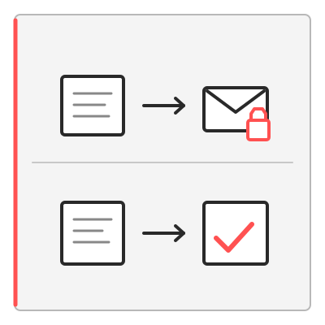
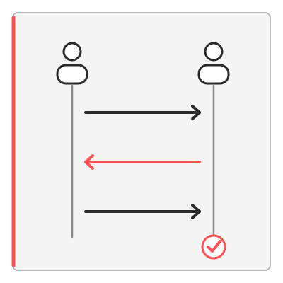
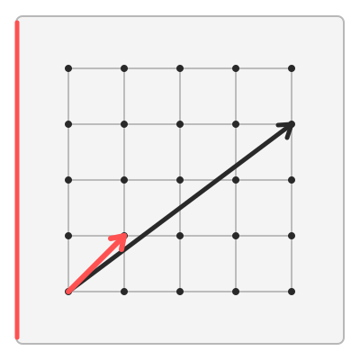

Research agenda
What we are working toward
The group's research program connects cryptographic theory with practical security needs. We aim to understand which security guarantees are possible under well-understood assumptions and construct efficient protocols with strong security guarantees.
Protocols for fundamental primitives

We design and analyze protocols for digital signatures and encryption schemes with additional functionalities and security properties. Current interests include blind and threshold signatures, which protect privacy or distribute trust, and searchable encryption, which enables queries over encrypted data.
Zero-knowledge proofs

Zero-knowledge proofs let a prover establish that a statement is true without revealing the private information behind it. We study efficient proof systems and ways to use them within larger cryptographic protocols, including signatures and privacy-preserving credentials.
Post-quantum cryptography

We study primitives based on assumptions believed to remain secure against quantum computers. A central question is how to retain advanced features, such as blind and threshold signing, with competitive performance compared to classical methods.
People
Group members
Details of the group and its members will be added here as the research program develops.